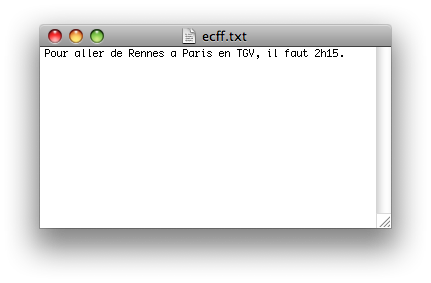

Bonjour à tous ! Soyez les bienvenus dans ce tutoriel sur les fonctions à nombre variable de paramètres.
Que sont les fonctions à nombre variable de paramètres ?
Eh bien ce sont des fonctions dont le nombre de paramètres n'est pas fixé dans leurs prototypes. Ainsi, on peut envoyer plus ou moins de paramètres à ces fonctions selon les circonstances :waw: . Et ces fonctions peuvent s'avérer très utiles lorsqu'on les connaît !
Les pré-requis sont : maîtriser le cours de C de M@teo21 jusqu'au chapitre 7 de la partie 2.
Une fonction à nombre variable de paramètres (fonction variadic) contiendra deux types de paramètres :
les paramètres obligatoires,
les paramètres optionnels.
Je vous présente donc ces paramètres sans plus tarder :magicien: .
Paramètres obligatoires
Les paramètres obligatoires sont comparables aux paramètres d'une fonction classique (en C) : ils devront toujours être appelés lors de l'utilisation de la fonction. Une fonction à nombre variable de paramètres doit contenir un paramètre obligatoire ou plus.
Paramètres optionnels
Les paramètres optionnels sont ceux qui font l'intérêt de la fonction... On pourra en envoyer 0, 1, 2, 40 ou 100 000 à la même fonction selon les circonstances. Du fait que l'on ne peut pas déclarer chaque paramètre dans le prototype, on déclarera seulement la présence de paramètres optionnels grâce à une "ellipse" :
... // 3 points sans espace entre eux (ellipse)
Prototype de la fonction
Maintenant que l'on a vu les paramètres obligatoires et optionnels, rassemblons les deux :p !
On mettra d'abord le(s) paramètre(s) obligatoire(s), et ensuite les paramètres optionnels. C'est la seule particularité du prototype d'une fonction à nombre variable de paramètres. On a donc un prototype du type :
type nomFonction(int parametreA, ...);
type nomFonction(int parametreA, int parametreB, ...);
Un petit problème vraiment gênant...
Voici ce qui va se passer lorsque votre ordinateur va obtenir les paramètres optionnels :
obtention du premier paramètre optionnel, puis action(s) sur ce paramètre,
obtention du paramètre optionnel suivant, puis action(s) sur ce paramètre,
...
Ce schéma n'est réalisable qu'au moyen d'une boucle. Mais voilà, l'ordinateur ne saura pas quand arrêter de lire les paramètres optionnels... Il faut donc sortir de la boucle à un moment, et pensez à cela dès que vous écrirez le prototype de votre fonction ! Il existe plusieurs solutions, les voici.
Première solution : passer en paramètre obligatoire le nombre de paramètres optionnels
Le principe est ici de faire le tour de la boucle un certain nombre de fois. Ce nombre est le nombre de paramètres optionnels.
L'ordinateur doit absolument connaître ce nombre, ce sera donc un nombre passé en paramètre obligatoire :
void multiplication(int *resultat, int nombreNombresAMultiplier, ...); //cette fonction pourrait multiplier ses paramètres optionnels
Deuxième solution : envoyer comme dernier paramètre optionnel une certaine valeur
Ici, le principe est de faire des tours de boucle, tant que l'ordinateur ne lit pas dans les paramètres optionnels, une certaine valeur donnée.
Dès que l'ordinateur obtiendra le paramètre optionnel ayant une certaine valeur, on sort de la boucle. Cette valeur est en réalité toujours NULL :
void multiplication(int *resultat, ...); //cette fonction pourrait multiplier ses paramètres optionnels, mais il ne faut pas oublier d'envoyer NULL comme dernier paramètre optionnel
Appel de la fonction
Je ne devrais même pas faire cette partie, c'est tellement simple d'appeler une fonction à nombre variable de paramètres :lol: !
Voici donc des exemples d'utilisation de fonctions :
// Avec comme paramètre obligatoire le nombre de paramètres optionnels :
void multiplication(int *resultat, int nombreNombresAMultiplier, ...); //prototype
multiplication(&variable, 2, 5, 3); // 2 nombres à multiplier : 5 et 3
multiplication(pointeur, 4, 5, 3, 7, 9); // 4 nombres à multiplier : 5, 3, 7 et 9
// Avec NULL comme dernier paramètre optionnel
void multiplication(int *resultat, ...);
multiplication(&variable, 5, 3, NULL);
multiplication(pointeur, 5, 3, 7, 9, NULL);
// En "détournant" une des deux premières solutions pour lire tous les paramètres optionnels
void fprintf(FILE *fichier, char texte[], ...);
fprintf(fichier, "Entre %s et %s, il y a %ld km", "Lille", "Marseille", 1004);
fprintf(fichier, "Entre %s et %s, il y a %ld km, c'est %s !", "Lille", "Marseille", 1004, "beaucoup");
C'est fini pour la théorie, place à la pratique :pirate: ! Pour vous apprendre à créer une fonction à nombre variable de paramètres, je vous propose d'écrire ma fameuse fonction multiplication.
Vous pouvez déjà commencer par créer cette fonction.
void multiplication(int *resultat, int nombreNombresAMultiplier, ...){
// Contenu de la fonction
}
La variable de type va_list
Nous allons d'abord déclarer une variable qui permettra de repérer le paramètre lu actuellement par l'ordinateur. Cette variable est souvent appelée ap par les pros , ce qui signifie argument pointer ;) . Cette variable un peu spéciale sera de type va_list. Voici donc notre code :
void multiplication(int *resultat, int nombreNombresAMultiplier, ...){
va_list ap;
}
La macro va_start
Il va maintenant falloir indiquer à l'ordinateur le premier paramètre qu'il va devoir lire : ce sera le premier paramètre optionnel. Pour indiquer cela à l'ordinateur, il faudra utiliser une autre macro : va_start. Cette macro prend en paramètres la variable ap et le nom du dernier paramètre obligatoire. Ainsi notre code sera :
Et maintenant, il faut obtenir la valeur de chaque paramètre optionnel. Chaque appel à la macro va_arg va nous retourner un paramètre optionnel. Le premier appel à cette macro va nous retourner le premier paramètre optionnel, le deuxième appel nous retournera le paramètre optionnel suivant, et ainsi de suite... Cette macro prend en compte 2 paramètres : ap et le type du paramètre à obtenir.
Notre petit algorithme consistera à multiplier un produit par le paramètre optionnel lu.
Avec le nombre de paramètres optionnels en paramètre obligatoire
Pour lire tous les paramètres nous allons utiliser une boucle de type for, qui sera lue tant qu'une variable initialisée à 0 et incrémentée à chaque tour de boucle sera strictement inférieure au nombre de paramètres optionnels. Voici donc notre code :
void multiplication(int *resultat, int nombreNombresAMultiplier, ...){
int i;
*resultat = 1;
va_list ap;
va_start(ap, nombreNombresAMultiplier);
for( i = 0 ; i < nombreNombresAMultiplier ; i++){
*resultat *= va_arg(ap, int);
}
}
Avec NULL comme dernier paramètre optionnel
On utilisera maintenant une boucle de type do{}while; ou while{} qui vérifiera à chaque tour si le paramètre lu n'est pas NULL. Voici donc la fonction :
void multiplication(int *resultat, ...){
int parametre = 1; // Valeur du paramètre actuel
*resultat = 1;
va_list ap;
va_start(ap, resultat);
do{ // On fait ce qui suit...
*resultat *= parametre; // on multiplie le produit par le paramètre actuel
parametre = va_arg(ap, int); // on obtient le paramètre actuel
}while(parametre != NULL); // ...Tant qu'on ne trouve pas le paramètre NULL
}
La macro va_end
On doit (encore) appeler une macro, cette macro doit être utilisée après va_arg, il s'agit de va_end. Cette macro n'admet qu'un paramètre : ap. Et voilà notre fonction finale...
...si le nombre de paramètres optionnels est envoyé en paramètre obligatoire
void multiplication(int *resultat, int nombreNombresAMultiplier, ...){
int i;
*resultat = 1;
va_list ap;
va_start(ap, nombreNombresAMultiplier);
for( i = 0 ; i < nombreNombresAMultiplier ; i++){
*resultat *= va_arg(ap, int);
}
va_end(ap);
}
...si le dernier paramètre optionnel est NULL
void multiplication(int *resultat, ...){
int parametre = 1; // Valeur du paramètre actuel
*resultat = 1;
va_list ap;
va_start(ap, resultat);
do{ // On fait ce qui suit...
*resultat *= parametre; // on multiplie le produit par le paramètre actuel
parametre = va_arg(ap, int); // on obtient le paramètre actuel
}while(parametre != NULL); // ...Tant qu'on ne trouve pas le paramètre NULL
va_end(ap);
}
Vous savez désormais utiliser des fonctions à nombre variable de paramètres. Mais je vous conseille fortement de faire les exercices suivants afin de vous entraîner et progresser :) .
Exercices non-corrigés
Addition de plusieurs termes
On commence par quelque chose de très facile. En effet on veut ajouter plusieurs termes, c'est presque la même chose qu'avec le produit.
Concaténer plusieurs chaînes de caractères
Il s'agit d'ajouter plusieurs chaînes les unes à la suite des autres. Libre à vous d'ajouter toutes les chaînes dans la première ou dans une nouvelle chaîne vierge ;) .
Je vous préviens, il y a une astuce qui permet de faire cet exercice très facilement...
Croyiez-vous vraiment que j'allais donner cette astuce :diable: ? Bon... Un indice : rendez-vous au chapitre sur les chaînes de caractères du tutoriel en C de M@teo21.
Jeu de questions/réponses
Le principe du jeu est de poser une question avec plus ou moins de réponses possibles. L'utilisateur choisit la réponse, puis l'ordinateur dit si la réponse est bonne ou non.
Grâce à une fonction de ce type... :
void poserQuestionTresDifficileNiark(char *question, int score, int numeroBonneReponse, int nbreReponses, ...);
...ajouter, supprimer ou modifier une question sera alors un jeu d'enfant :lol: . Ce qui rendra le travail du programmeur (vous) bien plus simple (après avoir fait cette fonction), bien plus rapide ! En effet votre fonction, où se trouve le jeu, ne sera qu'une succession d'appels à poserQuestionTresDifficileNiark, alors que ça aurait été un codage bien plus complexe autrement !
Exercice corrigé
Principe de mon exercice
Le principe de mon exercice est assez simple : créer une fonction similaire à la fonction fprintf.
J'ai appelé la fonction ecff (pour : Écrire une Chaîne Formatée dans un Fichier), elle doit avoir un prototype du type :
void ecff(FILE *fichier, char texte[], ...);
J'ai remplacé les %ld, %lf, %s... par d'autres signes :
type de variable
signe à inclure dans la chaîne
int
%a
long
%b
float
%c
double
%d
une chaîne
%e
faire apparaître le '%'
%%
Ainsi, cet appel à la fonction ecff... :
ecff(fichier, "Pour aller de %e a %e en %e, il faut %ah%a.", "Rennes", "Paris", "TGV", 2, 15);
...donnera le fichier suivant :

À vous de jouer ;) !
Correction
Le principe de la fonction est très simple... On va lire chaque caractère du paramètre obligatoire texte et :
Si l'on rencontre un '%' :
Si le caractère est suivi d'un 'a', 'b', 'c', 'd' ou 'e', on écrit le paramètre optionnel correspondant dans le fichier,
Si le caractère est suivi d'un '%', on écrit le '%' dans le fichier.
Si l'on rencontre un caractère normal, on l'écrit dans le fichier.
Ainsi on obtient ce code :
void ecff(FILE* fichier, char texte[], ...){
int tailleChaine = 0, i;
char chaineUtilisable[16] = {0}; //chaîne intermédiaire pour écrire dans le fichier
va_list ap;
va_start(ap, texte);
// calcul de la taille de la chaîne à écrire dans un fichier
tailleChaine = strlen(texte);
// parcours de chaque caractère
for(i = 0; i < tailleChaine; i++){
if(texte[i] == '%'){
i++; // on se place au caractère suivant pour savoir ce que c'est
switch(texte[i]){
case 'a' :
sprintf(chaineUtilisable, "%ld", va_arg(ap, int));
fputs(chaineUtilisable, fichier);
break;
case 'b' :
sprintf(chaineUtilisable, "%ld", va_arg(ap, long));
fputs(chaineUtilisable, fichier);
break;
case 'c' :
sprintf(chaineUtilisable, "%lf", va_arg(ap, float));
fputs(chaineUtilisable, fichier);
break;
case 'd' :
sprintf(chaineUtilisable, "%lf", va_arg(ap, double));
fputs(chaineUtilisable, fichier);
break;
case 'e' :
fputs(va_arg(ap, char*), fichier);
break;
case '%' :
fputc('%', fichier);
break;
}
}
else{
fputc(texte[i], fichier);
}
}
va_end(ap);
}
N'hésitez pas à continuer à vous entraîner ! Et même si vous ne voyez pas l'intérêt des fonctions à nombre variable de paramètres dans l'immédiat, ne les oubliez pas ! Vous trouverez cela bien pratique quand vous en aurez besoin ! Pour ma part, j'en ai déjà utilisé ;) .
N'hésitez pas non plus à poster des commentaires, et si vous le faites, n'hésitez pas à me dire quel(s) point(s) améliorer dans mon tutoriel ;) .
Voilà, ce tutoriel est maintenant fini. Vous savez tout sur les fonctions à nombre variable de paramètres :D ! J'espère que mon tutoriel vous à plu :) .